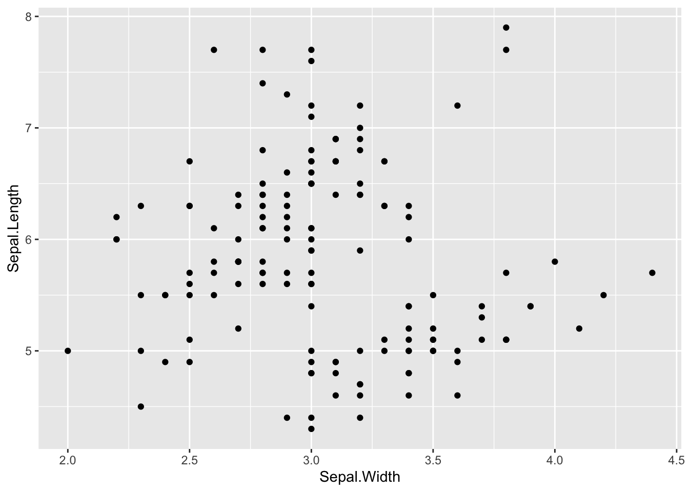
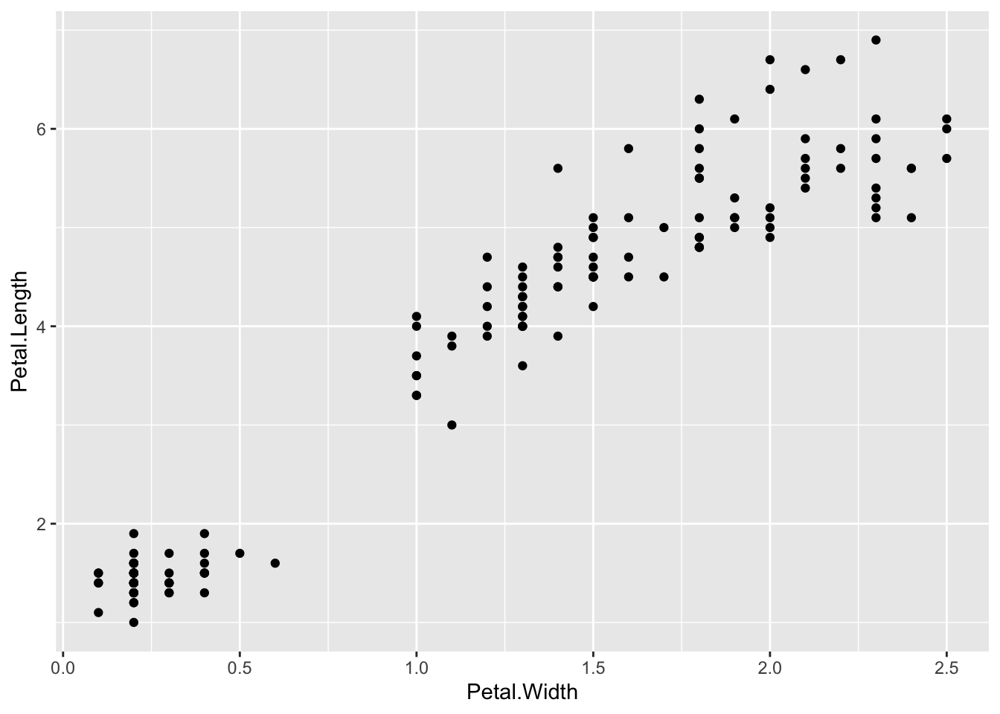

4 Tidyverse
This first package in R that we will talk about is actually a suite of packages that have a common syntax, called the tidyverse. They actually call it a dialect of the R language, which is kinda fun!
There are eight core packages in the tidyverse.
# You can install individual packages in the tidyverse like this
install.packages("dplyr")# But I like to use the tidyverse package that allows you to easily install and
# load the tidyverse
install.packages("tidyverse")# Then the package must be attached so that we have access to the functions
library(tidyverse) # Note that you don't need the quotation marks here# Print out the tidyverse packages
tidyverse::tidyverse_packages()
[1] "broom" "cli" "crayon" "dbplyr"
[5] "dplyr" "dtplyr" "forcats" "googledrive"
[9] "googlesheets4" "ggplot2" "haven" "hms"
[13] "httr" "jsonlite" "lubridate" "magrittr"
[17] "modelr" "pillar" "purrr" "readr"
[21] "readxl" "reprex" "rlang" "rstudioapi"
[25] "rvest" "stringr" "tibble" "tidyr"
[29] "xml2" "tidyverse" There are a bunch of tidyverse packages, but only the core eight are loaded with the library(tidyverse) function call, each other package must be loaded individually (e.g. library(broom)).
Each of these packages has a set of functions that it comes with.
# List several random functions from the dplyr package
ls("package:dplyr")[sample(1:length(ls("package:dplyr")), size = 20)]
[1] "any_vars" "transmute_at" "is.src" "group_by_if"
[5] "group_by_prepare" "nth" "filter_all" "cur_column"
[9] "group_modify" "combine" "add_rownames" "mutate"
[13] "mutate_each" "group_by_at" "arrange_all" "add_tally"
[17] "ensyms" "glimpse" "select_vars_" "tally" For fun, let’s break down how I am getting the random functions from each package. This is a good example of how you can break something down into it’s smallest components to understand what it is doing.
# Get the help page for a specific package
help(package = dplyr)You can also navigate to this page with the Help panel on RStudio.
4.1 tidyverse-specific resources
- tidyverse website – poke around this website and you can stumble on some good stuff
- The tidy tools manifesto – who doesn’t love a good manifesto? My favorite part of the tidyverse is the final principle, which is: 4. Design for humans. “Programs must be written for people to read, and only incidentally for machines to execute.” — Hal Abelson
- The tidyverse style guide – “Good coding style is like correct punctuation: you can manage without it, butitsuremakesthingseasiertoread.” Honestly, I think that joke vastly underestimates how important it is to have good coding style. You can actually read “butitsuremakesthingseasiertoread” pretty easily because you are an expert reader – you’ve been at it every day for years, maybe decades – coding, not so much. I don’t think can overstate how important I think it is to write visually pleasing code. It is good practice for your future self as much as it is for your collaborators.
4.1.1 Cheat sheets6
4.1.1.1 Core tidyverse
readr– import your data. Need to import data? Cool kids =read_csv().tidyr– tidy your data. Helps you tidy your data quick. What does tidy data mean? Keep reading…tibble– a new data.frame – doesn’t have a cheat sheet, just works in the shadows.dplyr– wrangle your data. Need to get a mean? Find a standard deviation? Look no further.ggplot2– plot your data – you already know ggplot.stringr– maipulate strings. Have a bunch of strings for some reason? Usestringr.purrr– functional programming. Wanna conserve energy like a cat? Replacefor()withmap().forcats– manipulate factors– Using a bunch of factors? Reorder them withforcats.
4.2 Tidy data
The tidyverse gets its name from the type of data that it is designed to interact with – tidy data. So let’s quickly define tidy data.
- Every column is a variable.
- Every row is an observation.
- Every cell is a single value.
Yikes. That’s abstract…
4.3 Messy data
An example of some messy data.
# Make up some random data
mdh_df <- tibble(gill = rnorm(15, mean = 12, sd = 2),
adductor = rnorm(15, mean = 18, sd = 2.5),
mantle = rnorm(15, mean = 6, sd = 3))
# Print the data
mdh_df
# A tibble: 15 × 3
gill adductor mantle
<dbl> <dbl> <dbl>
1 9.49 20.6 3.63
2 12.0 18.2 6.33
3 11.2 20.8 1.25
4 13.6 15.6 7.39
5 11.9 18.5 7.18
6 8.24 16.3 4.51
7 10.4 17.3 6.40
8 12.0 19.5 5.72
9 13.1 16.6 6.88
10 15.6 22.3 -4.85
11 15.9 14.8 6.50
12 8.07 24.6 3.96
13 10.3 21.1 5.32
14 10.2 21.3 5.87
15 14.5 17.3 7.364.4 Let’s tidy it
mdh_df <- mdh_df %>%
pivot_longer(everything(),
names_to = "tissue",
values_to = "iu_gfw")
mdh_df
# A tibble: 45 × 2
tissue iu_gfw
<chr> <dbl>
1 gill 9.49
2 adductor 20.6
3 mantle 3.63
4 gill 12.0
5 adductor 18.2
6 mantle 6.33
7 gill 11.2
8 adductor 20.8
9 mantle 1.25
10 gill 13.6
# … with 35 more rowsBAM! That is tidy data. 1. Every column is a variable – tissue and enzyme activity. 2. Every row is an observation – enzyme activity in I.U./g f.w.. 3. Every cell is a single value.
We will talk about tidy data more when we get to our own data sets later in the workshop, but for now, let’s continue to talk about the functions from the core tidyverse
4.5 Tidy iris challenge
Take the built in iris data set and convert it to tidy data format.
# First 6 rows of the iris data set
iris %>%
head()
Sepal.Length Sepal.Width Petal.Length Petal.Width Species
1 5.1 3.5 1.4 0.2 setosa
2 4.9 3.0 1.4 0.2 setosa
3 4.7 3.2 1.3 0.2 setosa
4 4.6 3.1 1.5 0.2 setosa
5 5.0 3.6 1.4 0.2 setosa
6 5.4 3.9 1.7 0.4 setosaClick for Tidy iris solultion.
# Correlation b/w sepal width and length
iris %>%
ggplot(aes(x = Sepal.Width, y = Sepal.Length)) +
geom_point()
# Correlation b/w petal width and length
iris %>%
ggplot(aes(x = Petal.Width, y = Petal.Length)) +
geom_point()
Warning: I have downloaded these cheat sheets and saved them for my quick access, but they may not be the most current version of the cheat sheet.↩︎